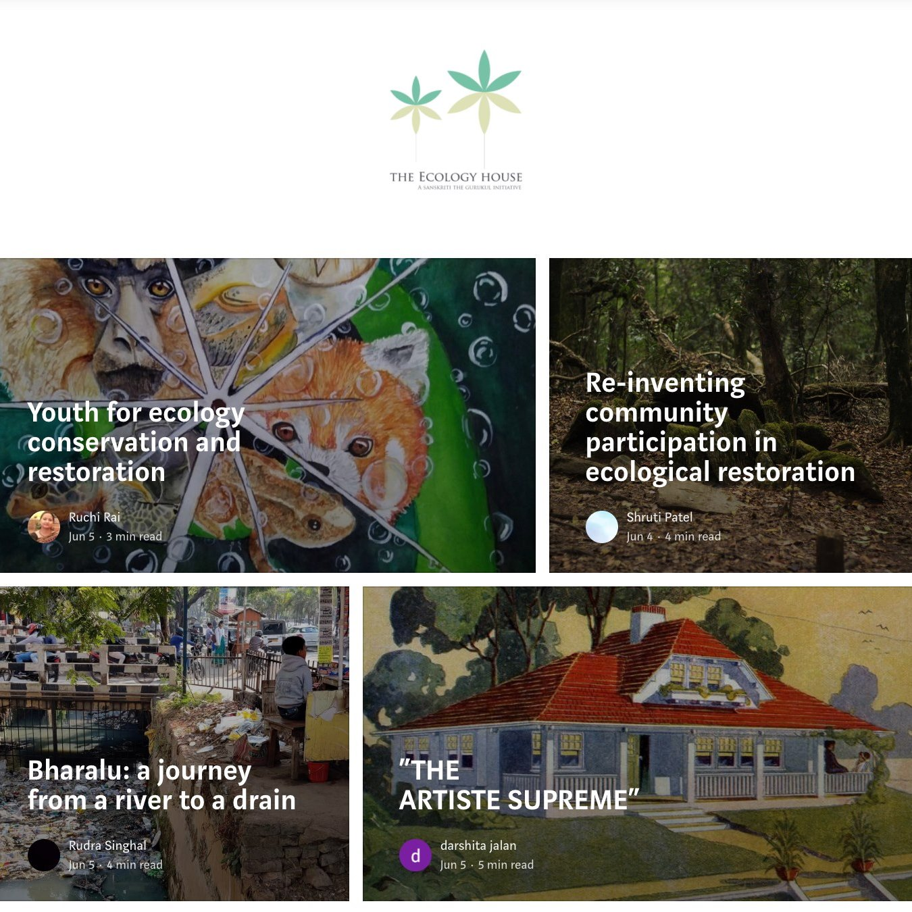

Gallery

school campus
Was established in 2003
This is the entrance to the school building. The Various exotic flowers (which are watered daily by the school gardener) are the highlight of this area. Due to this, many birds and beautiful butterflies frequently visit this area.
chemistry lab
Was renovated in 2019
This picture depicts students performing a chemical experiment in the newly renovated chemistry lab. The lab is known for its variety of chemicals and chemistry apparatus
school auditorium(New)
Was built in 2019
Recently built in 2019, this auditorium is a beautiful place where festivities are celebrated, competitions are organised and prizes are distributed. The above picture depicts a competition being conducted.
school achievements
Won "The School of the Year of Assam (2018-2019)"
2018-19: Sanskriti The Gurukul was awarded "The School of the Year of Assam" by The Telegraph School Awards.
Mr Ashutosh Aggarwal (Founder) won the ‘White Swan Award’ for the ‘Most Influential Leader 2015-16’ and the school was awarded ‘The White Swan Award’ for the ‘Most Influential Brand 2015-16’
Ashutosh Aggarwal, Founder, Sanskriti The Gurukul, had been honoured with the country’s finest award in education, the ‘White Swan Award’ for the ‘Most Influential Leader 2015-16’, and Sanskriti The Gurukul has been awarded with ‘The White Swan Award’ for the ‘Most Influential Brand 2015-16’, at the Taj Lands End, Mumbai on 3rd September, 2016.
ranked 10th in the country for Quality of Leadership/Management
The school was ranked 10th in the country for Quality of Leadership/Management among co-ed day schools by Education World for 2020-21.
alumni
John F. Kennedy
I think the success of any school can be measured by the contribution the alumni make to our national life.
Names of Alumni
Abhilasha Sarma (ISC 2018)

Yash Maheshwari (ISC 2016)
Yash Maheshwari (ISC 2016)
He is pursuing his Mechanical Engg. at National University of Singapore and was among the group of 25 students selected worldwide, representing the National Society of High School Scholars, to witness and experience the Stockholm Nobel Week in December'2016.
KNOW MORE
Mansi Jain(ISC 2012)
Ankita Kulabhi(ISC 2002)
What's New
-
Digital Learning (Online Learning)

By the end of March, in a matter of days, we had to shed our brick, mortar and textbook system and transform into a digital, connected and online school.
Digital schooling enabled a whole new world of opportunity. A break in the routine. A chance to explore new ways to engage. New tools to discover, new knowledge to discuss.
We recently conducted our first online evaluations, automated a part of our assessments, used AI tools for teaching Math and English, and even hosted an online cultural fest.
Today, in hindsight, we are happy to report that we've come through stronger, richer, feeling more prepared to tackle the unknown. We have come to understand better just how fragile and sensitive our ecological and economic systems are. It will remain our constant endeavour and promise to provide an education and a worldly exposure to our students in a manner that they have all the skills to solve complex problems in an un-certain world. -
First Digital Publication
We are happy to bring to you our first digital publication, on World Environment Day 2021. It's a collaborative effort by students and they have written some insightful notes and raised some pertinent questions about the state of the environment and ecology. This initiative by the Ecology House is led by Ms Ruchi Rai, HOD Science, Coordinator of Environmental Sciences at Sanskriti. You can follow our Medium channel to get regular updates each time a new story gets published on our page.